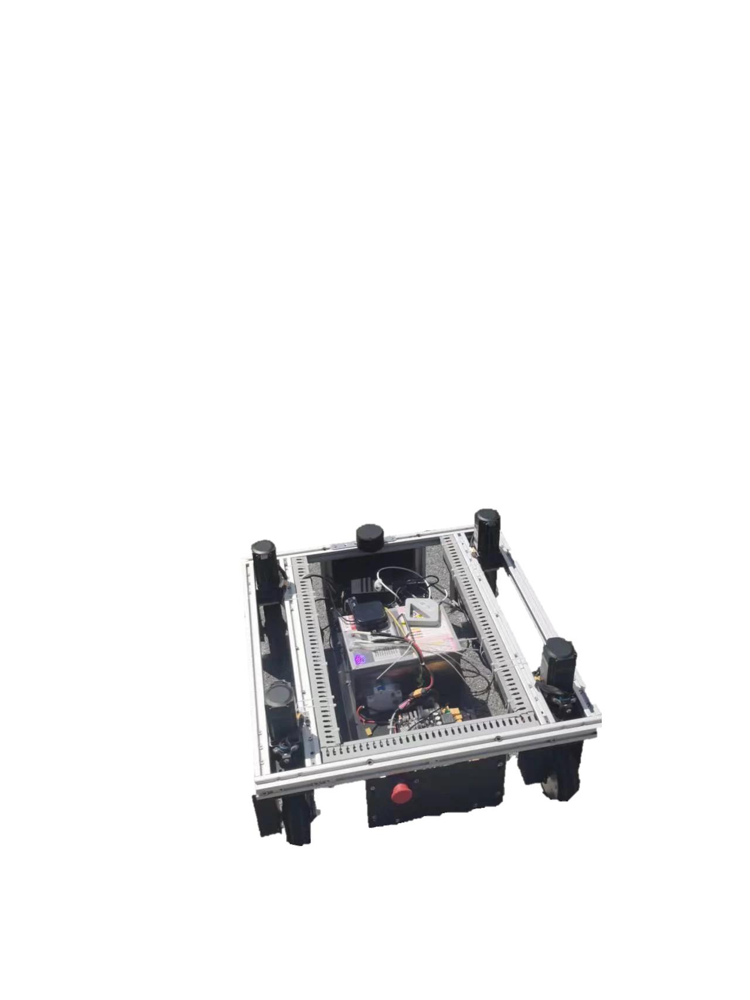
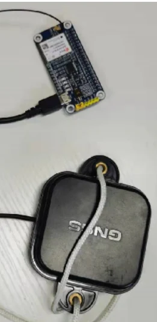

室外导航Outdoor navigation · 2022.03—2022.04Mar–Apr 2022
RTK 校园道路自主循迹RTK-guided campus route following
面向校园道路自主循迹，自建 RTK 基站并融合 GNSS、九轴 IMU，经 EKF 平滑与 MPC 控制，实现校园道路上的实机循迹和转弯。For autonomous campus-road tracking, a local RTK base, GNSS, and a nine-axis IMU feed EKF smoothing and MPC; real-robot tests demonstrate route following and turns on campus roads.
- 研发阶段Development period
- 2022.03—2022.04Mar–Apr 2022
- 演示地点Setting
- 山东大学校园道路Shandong University campus roads
- 传感器Sensors
- RTK GNSS、九轴 IMURTK GNSS and nine-axis IMU
项目背景Background
普通 GNSS 易受大气、遮挡和多路径影响，位置跳变会干扰底盘循迹。项目搭建差分定位链路，将室外定位和运动控制连接为校园道路导航系统。GNSS errors, occlusion, and multipath can disturb path tracking. Differential positioning links outdoor localization with base control for campus navigation.
任务说明Task
以山东大学东门停车场至计算机科学与技术学院的路线为目标，建立参考站与车载流动站，记录或设置参考轨迹，控制无人车沿道路行驶。The target route connects the east-gate parking area and the School of Computer Science and Technology. A base station and robot-mounted rover support route recording and autonomous tracking.
设备说明Robot hardware
四轮无人车搭载 GNSS 接收器、九轴 IMU、中央控制器、微控制器和轮毂电机；固定参考站向流动站提供差分信息。A four-wheel vehicle carries GNSS, a nine-axis IMU, a central controller, microcontrollers, and hub motors. A fixed base provides differential corrections to the rover.


系统和关键技术System and key technologies
参考站和流动站同步观测卫星信号，差分解算获取位置。九轴 IMU 补充姿态信息，通过 EKF 平滑位置和姿态后输入 MPC 控制器，减轻 GNSS 跳变与惯性累计误差对循迹的影响。The base and rover observe satellite signals for differential positioning. A nine-axis IMU supplies attitude, and an EKF smooths pose before MPC generates tracking commands.
演示与结果Demonstrations and results
补充道路车载视角、路侧拍摄与校园坡道等演示，并展示参考轨迹和实际轨迹对比。定位受到遮挡与多路径影响，RTK 定位本身不提供周围障碍感知。Demonstrations include onboard and roadside views, campus routes, and ramps, together with reference-versus-actual trajectories. Positioning remains sensitive to occlusion and multipath; RTK alone does not sense obstacles.